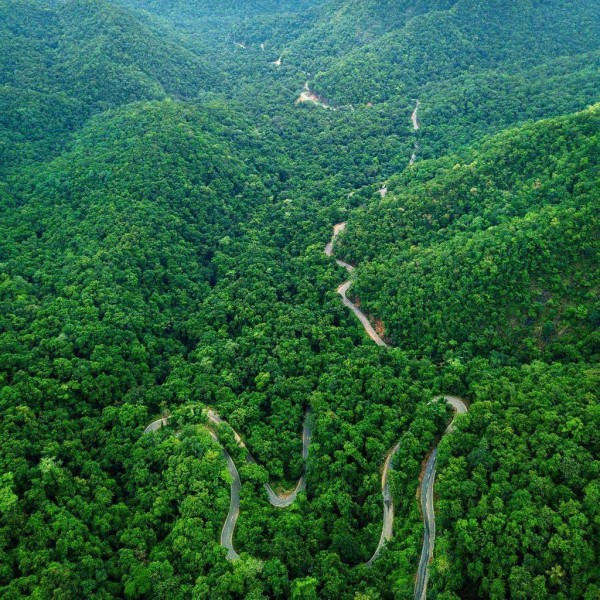

At a distance of 13 km from Maredumilli Bus Stand,
Manyam Viewpoint is a vantage point situated on Rajahmundry - Bhadrachalam......

Jalatharangini Waterfalls
At a distance of 7 km from Maredumilli Bus Stand, Jalatharangini
is a picturesque waterfall situated on Rajahmundry - Bhadrachalam Highway......
Amruthadhara Falls
At a distance of 15 km from Maredumilli Bus Stand,
Amruthadhara is a beautiful waterfall situated on
Rajahmundry - Bhadrachalam ......
Mothugudem Falls
At a distance of 7 km from Mothugudem,
36 km from Chinturu, 65 km from Maredumilli and
102 km from Bhadrachalam, Mothugudem waterfalls.....
Bhupathipalem Reservoir
At a distance of 4 km from Rampachodavaram Bus Stand
and 21 km from Maredumilli, Bhupathipalem Reservoir
is an earthen dam situated at Bhupathipalem.....